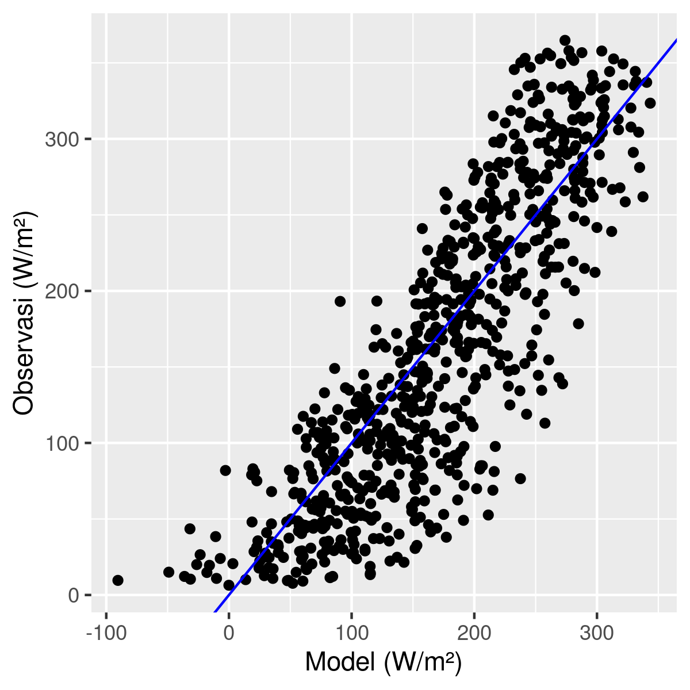
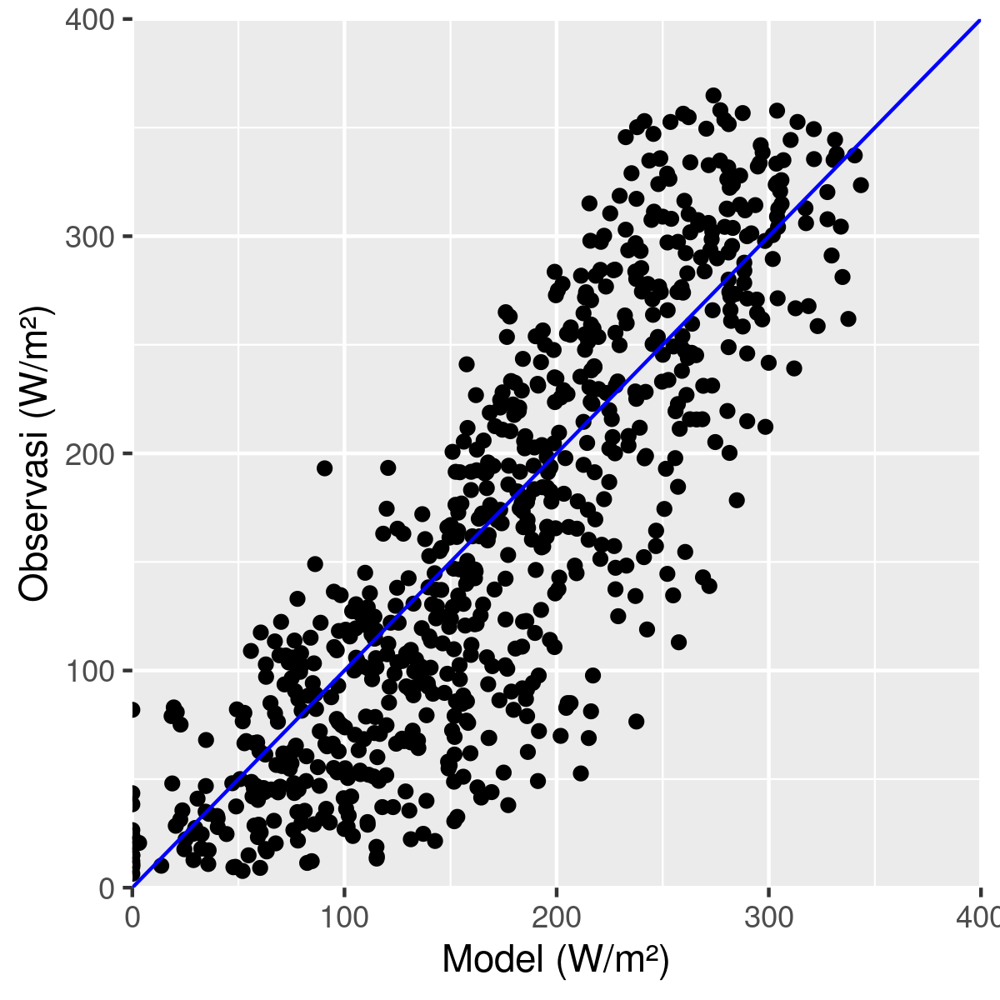
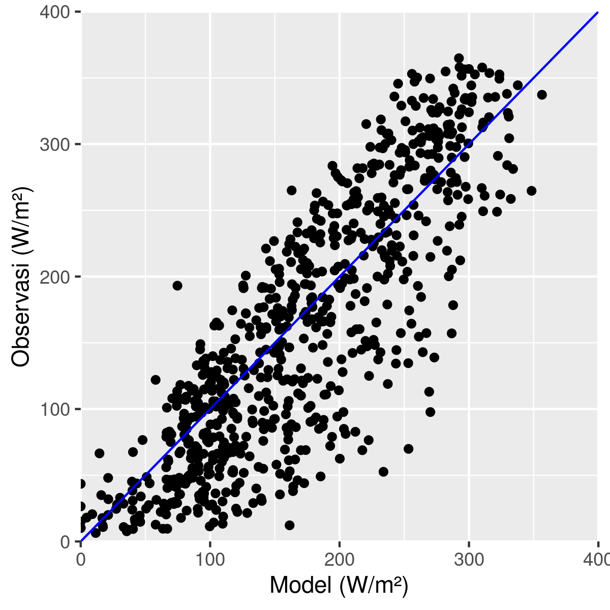
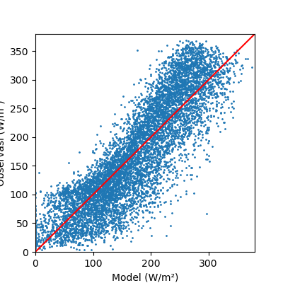
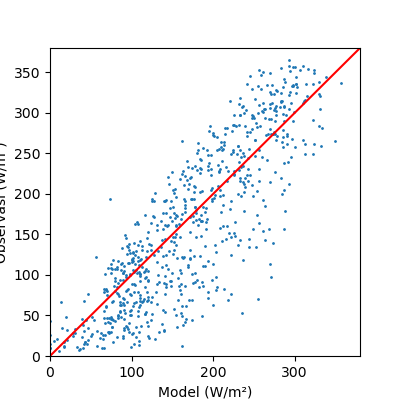

3 Model Pendugaan Radiasi Matahari
3.1 Pendahuluan
Radiasi matahari merupakan sumber energi utama dan berperan penting dalam siklus iklim bumi. Besaran radiasi matahari yang datang kemudian mengalami proses pemantulan, pemancaran, dan penerusan baik secara langsung maupun tidak langsung ke dan dari permukaan bumi. Radiasi matahari yang datang tersebut berpengaruh terhadap pergerakan massa udara dan massa air di bumi, selanjutnya melalui proses evaporasi maupun transpirasi, uap air dilepaskan ke udara dan membentuk awan sehingga terjadi hujan.
Pengukuran radiasi matahari secara langsung masih terbilang sedikit dengan periode perekaman data historis yang pendek. Padahal pengamatan radiasi matahari sangat penting dalam menjelaskan variabilitas dan perubahan iklim. Pada pemodelan iklim yang terus berkembang untuk menjelaskan kondisi iklim di masa lalu, saat ini dan masa depan tak lepas dari input data radiasi matahari dan kondisi karbon di atmosfer. Untuk mengetahui besaran nilai penduga radiasi matahari di suatu wilayah dapat dilakukan melalui model berdasarkan data historis parameter iklim lainnya seperti curah hujan dan suhu udara. Pendekatan dapat dilakukan dengan menggunakan model empirik dan model mekanistik.
Aplikasi pengolahan data yang digunakan dalam praktikum ini adalah R dan Python (pilih salah satu). Data contoh yang digunakan adalah data cuaca di Bandara Laguardia, New York, Amerika Serikat.
3.2 Model Pendugaan Ball et al. (2004)
Ball et al. (Ball, Purcell, and Carey 2004) membangun model empiris untuk menduga radiasi matahari di permukaan bumi dengan masukan suhu udara maksimum, suhu udara minimum, curah hujan, dan julian days. Persamaan yang digunakan berupa regresi linier berganda, yaitu
\[ Y = \beta_0 + \beta_1 X_1 + \beta_2 X_2 + \beta_3 X_3 + ... + \beta_{12} X_{12} \]
di mana keterangan setiap variabel bebas dapat dilihat pada tabel berikut.
| Prediktor | Keterangan |
|---|---|
| \(X_{1}\) | Curah hujan (mm) |
| \(X_{2}\) | Suhu udara maksimum (°C) |
| \(X_{3}\) | Suhu udara minimum (°C) |
| \(X_{4}\) | Day of Year |
| \(X_{5}\) | (Curah hujan)² |
| \(X_{6}\) | (Suhu udara maksimum)² |
| \(X_{7}\) | (Suhu udara minimum)² |
| \(X_{8}\) | (Day of Year)² |
| \(X_{9}\) | Curah hujan * Suhu udara minimum |
| \(X_{10}\) | Suhu udara maksimum * Suhu udara minimum |
| \(X_{11}\) | Curah hujan * Suhu udara maksimum |
| \(X_{12}\) | Suhu udara maksimum * Day of Year |
3.3 Model Pendugaan Hunt et al. (1998)
Model pendugaan radiasi matahari lain adalah oleh Hunt (Hunt, Kuchar, and Swanton 1998), yaitu gabungan model mekanistik dan empirik dengan masukan suhu udara maksimum, suhu udara minimum, dan curah hujan. Model mekanistik digunakan untuk menduga radiasi matahari yang berada di permukaan atmosfer (radiasi ekstraterestrial, \(S_0\)). Model pendugaan Hunt (1998) adalah sebagai berikut.
\[ R_s = a_0 S_0 (T_{max} - T_{min})^{0.5} + a_1 T_{max} + a_2 P + a_3 P^2 + a_4 \]
dimana \(R_s\) adalah radiasi matahari harian (\(MJ~m^{−2}~hari^{−1}\)), \(S_0\) adalah radiasi matahari di puncak atmosfer (\(MJ~m^{−2}~hari^{−1}\)), \(P\) adalah curah hujan (mm), \(T_{max}\) adalah suhu udara maksimum (\(^o C\)), dan \(T_{min}\) adalah suhu udara minimum (\(^o C\)). Untuk mengestimasi nilai \(S_0\), Hunt menggunakan persamaan mekanistik dalam Spitters (Spitters, Toussaint, and Goudriaan 1986), yaitu:
\[ S_0 = S_{sc} \left[ 1 + 0.033 \cos \left( \frac{360~t_d}{365} \right) \right] sin(β) \]
dimana, \(S_0\) adalah irradiasi ekstra terestrial (\(J~m^{−2} s^{−1}\)), \(S_{sc}\) konstanta matahari (\(1370~J~m^{−2} s^{−1}\)), suku \(cos\) adalah jarak tahunan antara bumi dan matahari yang dinyatakan dalam derajat, \(t_d\) adalah julian day, dan \(sin(β)\) adalah sinus sudut elevasi matahari (satuan detik) yang didefinisikan pada persamaan:
\[ sin(β) = 3600 \left[ D ~ sin(λ) ~ sin(δ) + \frac{24}{\pi} ~ cos(λ) ~ cos(δ) ~ \sqrt{(1 - tan^2(λ) ~ tan^2(δ))} \right] \]
dimana, \(λ\) adalah letak lintang dari lokasi stasiun dan δ adalah sudut deklinasi matahari pada saat julian day dan dinyatakan dalam derajat dengan estimasi pada persamaan:
\[ sin(δ) = -sin(23.45) ~ cos \left( \frac{360~(t_d + 10)}{365} \right) \]
dan \(D\) adalah panjang hari (jam) dengan persamaan:
\[ D = 12 + \frac{24}{180} arcsin(tan(λ) ~ tan(δ)) \]
3.4 Pengolahan Data
Data yang akan diolah bernama LaguardiaAirport-NYC.xlsx yang terdiri dari tiga worksheet. Worksheet ke-3 (RawData) adalah data yang akan diolah dengan berisikan 7 kolom: DOY (Day of Year, 1 sampai 365 atau 366), YEAR (tahun), PRCP (curah hujan, mm), TAVG (suhu udara rata-rata, °C), TMAX (suhu udara maksimum, °C), TMIN (suhu udara minimum, °C), dan SRAD (radiasi matahari langsung, W/m²). Data pada worksheet tersebut sudah dirapikan sehingga Anda dapat langsung mengolahnya. Periode data yang digunakan dibagi menjadi 2, yaitu untuk pembuatan dan validasi model dengan pemilihan tahun 1998-2018 dan 2019-2020, secara berturut-turut.
3.4.1 R
Package yang digunakan dalam pengolahan data di R adalah tidyverse dan readxl. Jika Anda belum memasang package ini, gunakan perintah berikut.
install.packages(c("tidyverse", "readxl"))Pengetikan kode R dapat dilakukan di aplikasi RStudio atau teks editor lainnya yang Anda kuasai.
Model Ball et al. (2004)
Impor data excel (
LaguardiaAirport-NYC.xlsx) pada sheetRawDatadengan perintah berikut.dpath <- "data/" # Lokasi folder data data <- read_excel(paste0(dpath, "LaguardiaAirport-NYC.xlsx"), sheet = "RawData") data# A tibble: 8,401 × 7 YEAR DOY PRCP TAVG TMAX TMIN SRAD <dbl> <dbl> <dbl> <dbl> <dbl> <dbl> <dbl> 1 1998 1 0 -5 -1.1 -8.9 107. 2 1998 2 0 4.7 10 -0.6 82.8 3 1998 3 0 12 15.6 8.3 74.7 4 1998 4 0 11.7 17.2 6.1 78.8 5 1998 5 0 5.9 6.7 5 75.6 6 1998 6 1 10.3 15 5.6 34.3 7 1998 7 28.7 9.5 13.9 5 26.8 8 1998 8 0.8 10.3 16.1 4.4 37.5 9 1998 9 0 12 15 8.9 46.8 10 1998 10 0 7.8 10 5.6 97.6 # … with 8,391 more rows # ℹ Use `print(n = ...)` to see more rowsPilih periode tahun untuk pembuatan dan validasi model dengan perintah berikut.
# Pembuatan model data_train <- data %>% filter(YEAR <= 2018) # Validasi model data_test <- data %>% filter(YEAR >= 2019)Lakukan perhitungan prediktor ke-5 sampai ke-12 sesuai dengan Tabel 3.1
data_train <- data_train %>% mutate( PRCP_sq = PRCP^2, TMAX_sq = TMAX^2, TMIN_sq = TMIN^2, DOY_sq = DOY^2, PRCP_TMAX = PRCP * TMAX, PRCP_TMIN = PRCP * TMIN, TMAX_TMIN = TMAX * TMIN, TMAX_DOY = TMAX * DOY ) data_test <- data_test %>% mutate( PRCP_sq = PRCP^2, TMAX_sq = TMAX^2, TMIN_sq = TMIN^2, DOY_sq = DOY^2, PRCP_TMAX = PRCP * TMAX, PRCP_TMIN = PRCP * TMIN, TMAX_TMIN = TMAX * TMIN, TMAX_DOY = TMAX * DOY )Lakukan pembuatan model regresi linier berganda pada data
data_trainsesuai dengan model Ball (Tabel 3.1).model <- lm(SRAD ~ PRCP + TMAX + TMIN + DOY + PRCP_sq + TMAX_sq + TMIN_sq + DOY_sq + PRCP_TMAX + PRCP_TMIN + TMAX_TMIN + TMAX_DOY, data = data_train) summary(model)Call: lm(formula = SRAD ~ PRCP + TMAX + TMIN + DOY + PRCP_sq + TMAX_sq + TMIN_sq + DOY_sq + PRCP_TMAX + PRCP_TMIN + TMAX_TMIN + TMAX_DOY, data = data_train) Residuals: Min 1Q Median 3Q Max -230.598 -30.858 2.829 32.497 189.113 Coefficients: Estimate Std. Error t value Pr(>|t|) (Intercept) -4.120e+01 4.068e+00 -10.126 < 2e-16 *** PRCP -3.315e+00 1.933e-01 -17.151 < 2e-16 *** TMAX 2.259e+01 8.621e-01 26.203 < 2e-16 *** TMIN -2.705e+01 8.212e-01 -32.945 < 2e-16 *** DOY 1.988e+00 4.015e-02 49.508 < 2e-16 *** PRCP_sq 2.469e-02 1.324e-03 18.649 < 2e-16 *** TMAX_sq -9.876e-01 4.577e-02 -21.577 < 2e-16 *** TMIN_sq -1.481e+00 5.217e-02 -28.386 < 2e-16 *** DOY_sq -5.281e-03 1.029e-04 -51.317 < 2e-16 *** PRCP_TMAX -1.217e-01 1.966e-02 -6.189 6.35e-10 *** PRCP_TMIN 1.448e-01 2.069e-02 6.998 2.82e-12 *** TMAX_TMIN 2.602e+00 9.450e-02 27.534 < 2e-16 *** TMAX_DOY -1.184e-02 7.625e-04 -15.534 < 2e-16 *** --- Signif. codes: 0 ‘***’ 0.001 ‘**’ 0.01 ‘*’ 0.05 ‘.’ 0.1 ‘ ’ 1 Residual standard error: 47.29 on 7657 degrees of freedom Multiple R-squared: 0.7423, Adjusted R-squared: 0.7419 F-statistic: 1838 on 12 and 7657 DF, p-value: < 2.2e-16Bisa Anda lihat pada bagian
Multiple R-squareduntuk mengetahui nilai dari koefisien determinasi (R²). Semua prediktor yang digunakan untuk mengestimasi radiasi matahari signifikan (p-value \(< 0.05\)) dengan nilai R²=74%.Anda dapat melakukan estimasi nilai radiasi matahari pada model yang sudah dibangun dengan menggunakan data validasi (
data_test) dengan perintah berikut.data_test <- data_test %>% mutate(SRAD_pred = predict(model, data_test))Kemudian, lakukan perhitungan koefisien determinasi (R²) dan korelasi Pearson (r) pada
data_testdengan perintah berikut.# korelasi Pearson (r) r <- cor(data_test$SRAD, data_test$SRAD_pred) # koefisien determinasi (R²) R2 <- r^2 # Print print(r); print(R2)[1] 0.8508384 [1] 0.7239259Atau bisa juga dengan melakukan plot antara nilai aktual dan prediksi radiasi matahari dengan menampilkan garis regresi beserta persamaan regresinya ditambah dengan nilai R² dan r (Gambar 3.1)
ggplot(data_test, aes(x = SRAD_pred, y = SRAD)) + geom_point() + geom_abline(intercept = 0, slope = 1, color = "blue") + labs(y = "Observasi (W/m²)", x = "Model (W/m²)")
Gambar 3.1: Perbandingan radiasi matahari aktual dengan model (Ball) Jika Anda perhatikan pada Gambar 3.1, nilai radiasi matahari tidak mungkin bernilai negatif dan ini umum terjadi saat menggunakan model regresi. Oleh karena itu, nilai radiasi matahari yang bernilai negatif diubah menjadi 0 (Gambar 3.2).
data_test <- data_test %>% mutate(SRAD_pred = ifelse(SRAD_pred < 0, 0, SRAD_pred)) ggplot(data_test, aes(x = SRAD_pred, y = SRAD)) + geom_point() + geom_abline(intercept = 0, slope = 1, color = "blue") + scale_x_continuous(limits = c(0, 400), expand = c(0, 0)) + scale_y_continuous(limits = c(0, 400), expand = c(0, 0)) + labs(y = "Observasi (W/m²)", x = "Model (W/m²)")
Gambar 3.2: Perbandingan radiasi matahari aktual dengan model (Ball)
Model Hunt et al. (1998)
Langkah-langkah pembuatan model radiasi matahari dengan menggunakan model Hunt et al. (1998) adalah sebagai berikut.
Impor data Excel. Caranya sama seperti pada subbab sebelumnya.
Sebelum Anda melakukan pembuatan model regresi linier berganda, Anda harus melakukan perhitungan \(S_0\) terlebih dahulu. Kami menyediakan fungsi untuk menghitung nilai \(S_0\) seperti pada Section 3.3. Anda hanya memasukkan nilai latitude serta day of year pada fungsi ini.
S0 <- function(lat, doy){ # Fungsi untuk menghitung sin(delta) sin_delta <- -sinpi(23.45 / 180) * cospi((360 * (doy + 10) / 365) / 180) asin_delt <- asin(sin_delta) * 180 / pi # sin(lat) * sin(delta) s_lat_delt <- sinpi(lat / 180) * sinpi(asin_delt / 180) # cos(lat) * cos(delta) c_lat_delt <- cospi(lat / 180) * cospi(asin_delt / 180) # (sin(lat) * sin(delta)) / (cos(lat) * cos(delta)) t_lat_delt <- s_lat_delt / c_lat_delt # Fungi perhitungan panjang hari (D) D <- 12 + 24/180 * asin(t_lat_delt) * 180 / pi # Fungsi perhitungan sudut elevasi matahari sin_beta <- 3600 * (D * s_lat_delt + 24/pi * c_lat_delt * sqrt(1 - t_lat_delt^2)) # Fungsi radiasi matahari ekstra terestrial S_0 <- 1370 * (1 + 0.033 * cospi(360 / 180 * doy / 365)) * sin_beta # Konversi J/m² ke MJ/m² return(S_0 / 1000000) }Kemudian, tambahkan kolom baru pada
datayang berisi nilai \(S_0\) dengan perintah berikut.data <- data %>% mutate( S0 = S0(40.77945, DOY) * 0.0864 # 0.0864 adalah konversi dari MJ/m² ke W/m² ) data# A tibble: 8,401 × 8 YEAR DOY PRCP TAVG TMAX TMIN SRAD S0 <dbl> <dbl> <dbl> <dbl> <dbl> <dbl> <dbl> <dbl> 1 1998 1 0 -5 -1.1 -8.9 107. 1.15 2 1998 2 0 4.7 10 -0.6 82.8 1.16 3 1998 3 0 12 15.6 8.3 74.7 1.16 4 1998 4 0 11.7 17.2 6.1 78.8 1.17 5 1998 5 0 5.9 6.7 5 75.6 1.18 6 1998 6 1 10.3 15 5.6 34.3 1.18 7 1998 7 28.7 9.5 13.9 5 26.8 1.19 8 1998 8 0.8 10.3 16.1 4.4 37.5 1.20 9 1998 9 0 12 15 8.9 46.8 1.20 10 1998 10 0 7.8 10 5.6 97.6 1.21 # … with 8,391 more rows # ℹ Use `print(n = ...)` to see more rowsUntuk membuat model, lakukan pembagian data menjadi
data_testdandata_traindengan perintah berikut.data_train <- data %>% filter(YEAR <= 2018) data_test <- data %>% filter(YEAR >= 2019)Hitunglah
S0 * (Tmax - Tmin)^0.5danPRCP^2dengan menambahkan dua kolom baru padadata_traindandata_testdengan perintah berikut.data_train <- data_train %>% mutate( TMAX_TMIN = S0 * (TMAX - TMIN)^0.5, PRCP_sq = PRCP^2 ) data_test <- data_test %>% mutate( TMAX_TMIN = S0 * (TMAX - TMIN)^0.5, PRCP_sq = PRCP^2 )Buat model regresi linier berganda
model <- lm(SRAD ~ TMAX_TMIN + TMAX + PRCP + PRCP_sq, data = data_train) summary(model)Call: lm(formula = SRAD ~ TMAX_TMIN + TMAX + PRCP + PRCP_sq, data = data_train) Residuals: Min 1Q Median 3Q Max -303.18 -30.23 5.38 33.75 172.69 Coefficients: Estimate Std. Error t value Pr(>|t|) (Intercept) 17.315218 1.349717 12.829 <2e-16 *** TMAX_TMIN 24.430366 0.284492 85.874 <2e-16 *** TMAX 0.144476 0.084287 1.714 0.0866 . PRCP -4.237145 0.098195 -43.150 <2e-16 *** PRCP_sq 0.028795 0.001301 22.129 <2e-16 *** --- Signif. codes: 0 ‘***’ 0.001 ‘**’ 0.01 ‘*’ 0.05 ‘.’ 0.1 ‘ ’ 1 Residual standard error: 47.51 on 7665 degrees of freedom Multiple R-squared: 0.7396, Adjusted R-squared: 0.7395 F-statistic: 5443 on 4 and 7665 DF, p-value: < 2.2e-16Kemudian, lakukan prediksi pada
data_testdan evaluasi hasil estimasi model menggunakan metrik \(R^2\) dan korelasi Pearson dengan perintah berikut .data_test <- data_test %>% mutate(SRAD_pred = predict(model, data_test)) # korelasi Pearson (r) r <- cor(data_test$SRAD, data_test$SRAD_pred) # koefisien determinasi (R²) R2 <- r^2 print(r); print(R2)[1] 0.8474758 [1] 0.7182153Sama seperti Ball, model Hunt juga dapat dipastikan estimasi radiasi matahari bernilai negatif. Untuk mengubahnya menjadi 0, lakukan hal yang sama seperti pada model Ball pada langkah ke-7 dan buat grafiknya (Gambar 3.3)
data_test <- data_test %>% mutate(SRAD_pred = ifelse(SRAD_pred < 0, 0, SRAD_pred)) ggplot(data_test, aes(x = SRAD_pred, y = SRAD)) + geom_point() + geom_abline(intercept = 0, slope = 1, color = "blue") + scale_x_continuous(limits = c(0, 400), expand = c(0, 0)) + scale_y_continuous(limits = c(0, 400), expand = c(0, 0)) + labs(y = "Observasi (W/m²)", x = "Model (W/m²)")
Gambar 3.3: Perbandingan radiasi matahari aktual terhadap model (Hunt)
3.4.2 Python
Package yang digunakan adalah pandas, sklearn, dan matplotlib. Impor kedua package tersebut dengan perintah berikut.
import pandas as pd
import matplotlib.pyplot as plt
from sklearn.linear_model import LinearRegression
from sklearn import metricsSebelum mengimpor data dalam bentuk excel, Anda perlu memasang package openpyxl.
pip install openpyxlModel Ball et al. (2004)
Impor data dengan perintah berikut.
path = 'data' data = pd.read_excel(f'{path}/LaguardiaAirport-NYC.xlsx', sheet_name='RawData') print(data)YEAR DOY PRCP TAVG TMAX TMIN SRAD 0 1998 1 0.0 -5.0 -1.1 -8.9 106.8 1 1998 2 0.0 4.7 10.0 -0.6 82.8 2 1998 3 0.0 12.0 15.6 8.3 74.7 3 1998 4 0.0 11.7 17.2 6.1 78.8 4 1998 5 0.0 5.9 6.7 5.0 75.6 ... ... ... ... ... ... ... ... 8396 2020 362 0.0 -0.2 4.4 -2.7 99.4 8397 2020 363 0.0 6.1 11.1 2.2 61.3 8398 2020 364 0.0 5.6 7.2 0.0 97.1 8399 2020 365 0.0 1.8 7.2 -1.0 56.5 8400 2020 366 13.5 7.7 10.0 3.3 24.0 [8401 rows x 7 columns]Pilih periode tahun untuk pembuatan dan validasi model dengan perintah berikut.
# Pembuatan model data_train = data[data['YEAR'] < 2019] # Validasi model data_test = data[data['YEAR'] >= 2019]Lakukan perhitungan prediktor ke-5 sampai ke-12 sesuai dengan Tabel 3.1
data_train.loc[:, 'PRCP_sq'] = data_train.loc[:, 'PRCP'] ** 2 data_train.loc[:, 'TMAX_sq'] = data_train.loc[:, 'TMAX'] ** 2 data_train.loc[:, 'TMIN_sq'] = data_train.loc[:, 'TMIN'] ** 2 data_train.loc[:, 'DOY_sq'] = data_train.loc[:, 'DOY'] ** 2 data_train.loc[:, 'PRCP_TMAX'] = data_train.loc[:, 'PRCP'] * data_train.loc[:, 'TMAX'] data_train.loc[:, 'PRCP_TMIN'] = data_train.loc[:, 'PRCP'] * data_train.loc[:, 'TMIN'] data_train.loc[:, 'TMAX_TMIN'] = data_train.loc[:, 'TMAX'] * data_train.loc[:, 'TMIN'] data_train.loc[:, 'TMAX_DOY'] = data_train.loc[:, 'TMAX'] * data_train.loc[:, 'DOY']Lakukan pembuatan model regresi linier berganda pada data
data_trainsesuai dengan model Ball (Tabel 3.1).# Model regresi linier model = LinearRegression() model.fit( # Prediktor data_train.loc[:, ['PRCP', 'TAVG', 'TMAX', 'TMIN', 'PRCP_sq', 'TMAX_sq', 'TMIN_sq', 'DOY_sq', 'PRCP_TMAX', 'PRCP_TMIN', 'TMAX_TMIN', 'TMAX_DOY']], # Prediktan data_train.loc[:, 'SRAD'] )Oleh karena respon dari package
sklearntidak bisa menghasilkan summary seperti pada R, Anda perlu membuat fungsi tersendiri. Pada fungsimetrics, telah tersedia beberapa metrik yang dapat digunakan untuk mengevaluasi model.def summary(model, x, y): # Estimasi y_pred = model.predict(x) # Jika terdapat nilai negatif, maka nilai tersebut akan diubah menjadi 0 y_pred[y_pred < 0] = 0 # Metrik r2 = metrics.r2_score(y, y_pred) rmse = metrics.mean_squared_error(y, y_pred, squared=False) mae = metrics.mean_absolute_error(y, y_pred) print(f'R² = {round(r2, 2)}') print(f'RMSE = {round(rmse, 2)}') print(f'MAE = {round(mae, 2)}') summary(model, data_train.loc[:, ['PRCP', 'TAVG', 'TMAX', 'TMIN', 'PRCP_sq', 'TMAX_sq', 'TMIN_sq', 'DOY_sq', 'PRCP_TMAX', 'PRCP_TMIN', 'TMAX_TMIN', 'TMAX_DOY']], data_train.loc[:, 'SRAD'] )R² = 0.74 RMSE = 47.25 MAE = 37.6Untuk memvalidasi model, Anda perlu menghitung prediktor ke-5 sampai ke-12 pada data
data_testsesuai dengan Tabel 3.1. Kemudian, gunakanmodel.predict()untuk menghitung prediksi pada datadata_test.data_test.loc[:, 'PRCP_sq'] = data_test.loc[:, 'PRCP'] ** 2 data_test.loc[:, 'TMAX_sq'] = data_test.loc[:, 'TMAX'] ** 2 data_test.loc[:, 'TMIN_sq'] = data_test.loc[:, 'TMIN'] ** 2 data_test.loc[:, 'DOY_sq'] = data_test.loc[:, 'DOY'] ** 2 data_test.loc[:, 'PRCP_TMAX'] = data_test.loc[:, 'PRCP'] * data_test.loc[:, 'TMAX'] data_test.loc[:, 'PRCP_TMIN'] = data_test.loc[:, 'PRCP'] * data_test.loc[:, 'TMIN'] data_test.loc[:, 'TMAX_TMIN'] = data_test.loc[:, 'TMAX'] * data_test.loc[:, 'TMIN'] data_test.loc[:, 'TMAX_DOY'] = data_test.loc[:, 'TMAX'] * data_test.loc[:, 'DOY'] summary(model, data_test.loc[:, ['PRCP', 'TAVG', 'TMAX', 'TMIN', 'PRCP_sq', 'TMAX_sq', 'TMIN_sq', 'DOY_sq', 'PRCP_TMAX', 'PRCP_TMIN', 'TMAX_TMIN', 'TMAX_DOY']], data_test.loc[:, 'SRAD'] )R² = 0.72 RMSE = 51.69 MAE = 40.72Untuk membuat grafik dari
data_testmaupundata_train, Anda dapat menggunakanmatplotlib(Gambar 3.4)y_pred = model.predict(data_train.loc[:, ['PRCP', 'TMAX', 'TMIN', 'DOY', 'PRCP_sq', 'TMAX_sq', 'TMIN_sq', 'DOY_sq', 'PRCP_TMAX', 'PRCP_TMIN', 'TMAX_TMIN', 'TMAX_DOY']]) # Grafik data train plt.figure(figsize=(10, 10)) plt.scatter(data_train.loc[:, 'SRAD'], y_pred) plt.xlim(0, 380) plt.ylim(0, 380) # Menambahkan label pada sumbu x dan y plt.xlabel('Model (W/m²)') plt.ylabel('Observasi (W/m²)') plt.show()
Gambar 3.4: Perbandingan radiasi matahari aktual terhadap model (Ball)
Model Hunt et al. (1998)
Impor data Excel. Caranya sama seperti pada subbab sebelumnya.
Sebelum Anda melakukan pembuatan model regresi linier berganda, Anda harus melakukan perhitungan \(S_0\) terlebih dahulu. Kami menyediakan fungsi untuk menghitung nilai \(S_0\) seperti pada Section 3.3. Anda hanya memasukkan nilai latitude serta day of year pada fungsi ini. Perlu modul tambahan
numpyuntuk menghitung nilai trigonometri.from numpy import sin, cos, pi, arcsin, sqrt def S0(lat, doy): # Fungsi untuk menghitung sin(delta) sin_delta = -sin(pi * 23.45 / 180) * cos(pi * (360 * (doy + 10) / 365) / 180) asin_delt = arcsin(sin_delta) * 180 / pi # sin(lat) * sin(delta) s_lat_delt = sin(pi * lat / 180) * sin(pi * asin_delt / 180) # cos(lat) * cos(delta) c_lat_delt = cos(pi * lat / 180) * cos(pi * asin_delt / 180) # (sin(lat) * sin(delta)) / (cos(lat) * cos(delta)) t_lat_delt = s_lat_delt / c_lat_delt # Fungi perhitungan panjang hari (D) D = 12 + 24/180 * arcsin(t_lat_delt) * 180 / pi # Fungsi perhitungan sudut elevasi matahari sin_beta = 3600 * (D * s_lat_delt + 24/pi * c_lat_delt * sqrt(1 - t_lat_delt**2)) # Fungsi perhitungan radiasi matahari S_0 = 1370 * (1 + 0.033 * cos(pi * 360 / 180 * doy / 365)) * sin_beta # Konversi J/m² ke MJ/m² return S_0 / 1000000Kemudian, tambahkan kolom baru pada
datayang berisi nilai \(S_0\) dengan perintah berikut.data.loc[:, 'S0'] = S0(40.77945, data.loc[:, 'DOY'])Untuk membuat model, lakukan pembagian data menjadi
data_testdandata_traindengan perintah berikut.# Pembuatan model data_train = data[data['YEAR'] < 2019] # Validasi model data_test = data[data['YEAR'] >= 2019]Hitunglah
S0 * (Tmax - Tmin)^0.5danPRCP^2dengan menambahkan dua kolom baru padadata_traindandata_testdengan perintah berikut.# Data train data_train.loc[:, 'S0_TMAX_TMIN'] = data_train.loc[:, 'S0'] * sqrt(data_train.loc[:, 'TMAX'] - data_train.loc[:, 'TMIN']) data_train.loc[:, 'PRCP_sq'] = data_train.loc[:, 'PRCP'] ** 2 # Data test data_test.loc[:, 'S0_TMAX_TMIN'] = data_test.loc[:, 'S0'] * sqrt(data_test.loc[:, 'TMAX'] - data_test.loc[:, 'TMIN']) data_test.loc[:, 'PRCP_sq'] = data_test.loc[:, 'PRCP'] ** 2Buat model regresi linier berganda
model = LinearRegression() model.fit( # Prediktor data_train.loc[:, ['S0_TMAX_TMIN', 'PRCP', 'PRCP_sq']], # Prediktan data_train.loc[:, 'SRAD'] )Kemudian, lakukan validasi model dengan menggunakan
data_test.summary(model, data_test.loc[:, ['S0_TMAX_TMIN', 'PRCP', 'PRCP_sq']], data_test.loc[:, 'SRAD'] )R² = 0.71 RMSE = 52.53 MAE = 41.64Terakhir, lakukan pembuatan grafik dari
data_test(Gambar 3.5)y_pred = model.predict(data_test.loc[:, ['S0_TMAX_TMIN', 'PRCP', 'PRCP_sq']]) y_pred[y_pred < 0] = 0 # Visualize fig = plt.figure(figsize=(4, 4)) # Make plot scatter with small size plt.scatter(y_pred, data_test.loc[:, 'SRAD'], s=1) # Make line plot 1:1 plt.plot([0, 400], [0, 400], color='red') # expand plot area plt.xlim(0, 380) plt.ylim(0, 380) # Set axis labels plt.xlabel('Model (W/m²)') plt.ylabel('Observasi (W/m²)') plt.show()
Gambar 3.5: Perbandingan radiasi matahari aktual terhadap model (Hunt)